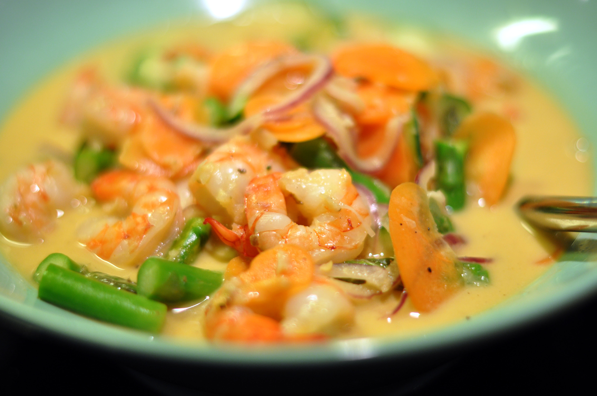

Malai Prawn

This delicious, mild curry is so easy to make. The word 'malai' means cream, but this curry gets its creaminess from coconut milk. This is a recipe from Bengal, which is famous for its seafood. Serve it with steamed basmati rice.
Ingredients:
- ¼ teaspoon cardamom seeds
- 3 whole cloves
- 3 (1 inch) pieces cinnamon stick
- 2 tablespoons vegetable oil
- 4 whole cloves
- 4 green cardamom pods
- 2 (1 1/2 inch) pieces stick cinnamon
- 1 onion, grated
- 1 ¼ teaspoons ginger paste
- 1 ¼ teaspoons garlic paste
- ½ teaspoon ground turmeric
- ¼ teaspoon cayenne pepper
- ½ cup finely chopped tomato
- ½ cup water
- 1 cup coconut milk
- 1 pound tiger prawns, peeled and deveined
- 1 teaspoon ghee (clarified butter) (Optional)
Cooking procedure:
- Prepare the fresh garam masala: in a coffee grinder, grind the cardamom seeds, 3 whole cloves, and 3 cinnamon sticks to a fine powder. Set aside.
- Heat the vegetable oil in a skillet over medium heat. Add the 4 whole cloves, 4 cardamom pods, and 2 sticks of cinnamon and fry for a few seconds (take care as cloves tend to pop out of the pan). Stir in the grated onion and reduce the heat to medium-low. Cook and stir until the liquid dries and the onion no longer smells raw, about 5 minutes. Add the ginger paste and garlic paste and cook for 2 minutes, stirring constantly.
- Stir in the turmeric and cayenne pepper. Add the chopped tomatoes and cook until the tomatoes are soft, about 5 minutes. Pour in the water, cover the pan, and cook for an additional 5 minutes.
- Pour in the coconut milk and stir well. When the mixture is just below boiling, stir in the prawns. Sprinkle the mixture with almost all of the fresh garam masala powder, reserving a pinch to use as a garnish. Gently stir to combine. Do not cover the pan at this stage, as the coconut milk will curdle.
- As soon as the prawns are pink and cooked through, 3 to 5 minutes, add the ghee. Remove the pan from the heat. Sprinkle the reserved garam masala over the dish and serve.